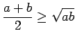
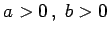
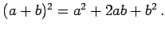
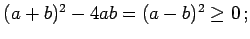
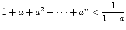

Es wird von einem bereits als richtig bewiesenen Satz (Voraussetzung p) ausgegangen und daraus die Wahrheit des zu beweisenden Satzes (Behauptung q) abgeleitet. Bei der logischen Schlußfolgerung wird vorwiegend die Implikation oder die Äquivalenz verwendet.
| Beispiel |
|
Die Ungleichung  für  ist zu beweisen. Voraussetzung ist die als richtig erkannte binomische Formel  Durch Subtraktion von 4ab folgt:  und aus dieser Ungleichung erhält man unmittelbar die Behauptung, wenn man sich beim Radizieren wegen a>0 und b>0 auf das positive Vorzeichen beschränkt. |
| Beispiel |
|
Die Ungleichung  für 0<a<1 ist zu beweisen. |